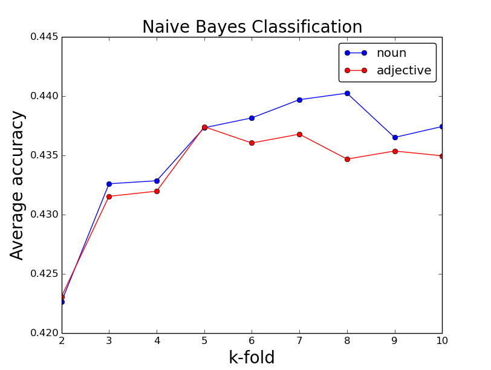
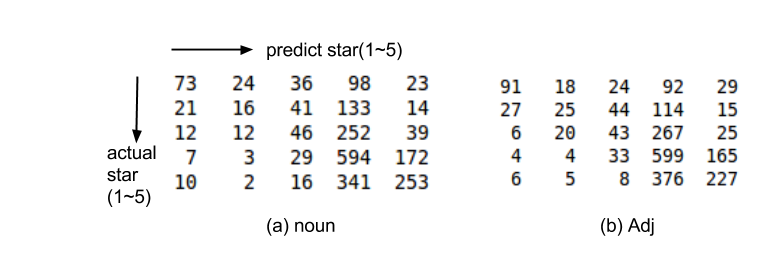

Yaonan Zhong
School of EECS
Oregon State University
Abstract
In this paper, we apply machine learning theory into predicting rating of Yelp user review text. In feature selection, we use part-of-speech to filter the keywords so as to obtain more informative features. And we discuss the performance of two classifier, Naive Bayes model and Support Vector Machine, by exploring the impact of different parameters on them, such as k-fold cross validation, penalty parameters C and kernel functions.
1. Introduction
Yelp ratings brings us a new way to choose a business as a customer or run a business as an owner in our daily life. We prefer restaurants or hotels with higher ratings which determine our choice most time. However, we know that not all user ratings are objective all the time. It is possible that a very positive review may come with a five-star rating while another similar one just has a three-star rating. And sometimes we may not have enough time to read all the reviews before making a decision. So can we learn a model to predict the rating for a review text? The underlying goal here is to attenuate the effect of subjective reviews by learning rating from a large number of examples. Note that we can consider subjective ratings as noises in our learning model.
Yelp provides an open dataset from the greater Phoenix, AZ metropolitan area, which has information on businesses, reviews, users and check-ins. These data provide us an opportunity to extract useful characteristics from existing businesses and reviews, such as predicting the amount of future reviews using regression models and sentiment analysis [1], designing visualization tool for user reviews [2], extracting latent topics [3,4]. Those works aim to either help businesses improve their rating or help users speed up processing reviews. In this paper, we describe our effort to predict the star rating based on reviews text. Since restaurant is the most popular category, we will focus on the restaurant reviews. And particularly we will adopt Chinese restaurants as our research target instead of all the restaurants to reduce the computation load. Finally, we extract 11355 reviews from the dataset as the learning samples.
Now we need to consider the model selection. Since we are doing document classification, we will use Naive Bayes model and support vector machine as our choices, and compare the performances between both models. Another important thing is feature selection. How do we construct our feature so as to obtain best performance? That would also be a part of our research. We will apply k-fold cross validation in our training process.
2. Generating Review Text Features
The first task of our learning is generating feature vector for the review text. We can use the simplest method, bag-of-words, to describe reviews. Each review is represented by a vector including all the keywords from our vocabulary. So the dimension of a vector is the number of words in the vocabulary. The value of each key word in a feature vector is the number of its occurrence in its corresponding review text. For example:
If vocabulary = [A, B, C, D], review text = AHJKBDLB: Then the feature vector of the review is [1, 2, 0, 1].
So how do we construct the vocabulary? In other words, how do we select the features so as to obtain best learning performance? Here we will consider three selection methods. The first one extracts all the unique words from the training set as our vocabulary. However, we can filter the words with Part-of-Speech(PoS) to obtain more meaningful keywords. So the second one extracts all the unique adjective words from the training set. We will also consider all the unique noun words as our third choice. And the stopwords are removed in all cases. In order to apply PoS selection, we use Python Natural Language Toolkit [5] to pre-process the review text. Compare the first method with the second and third, actually we are doing dimension reduction.
3. Learning Models
Base on the feature vectors generated above, we will apply different learning models to our training samples.
3.1 Naive-Bayes Classifier
Naive Bayes is a popular method for text categorization. In simple terms, a naive Bayes classifier assumes that the value of a particular feature is unrelated to the presence or absence of any other feature, given the class variable. Here we will implement the multinomial event model with Laplace smoothing. It is very straightforward to use our feature vector for multinomial learning, since it already takes into account the number of occurrence of each keyword. In this model, all the implementations of the classifier and the k-fold cross validation are coded by myself using python programming language. And we choose k from 2 to 10 to compare their performance. Note that for each k-fold cross validation, we have to regenerate the vocabulary for each epoch since the vocabulary is extract from the train set and the training set is different for each epoch.
Laplace smoothing for multinomial case:

3.2 Support Vector Machine
Support Vector Machine(SVM) is primarily a classier method that performs classification tasks by constructing hyperplanes in a multidimensional space that separates cases of different class labels. SVM is effective in high dimensional spaces. It uses a subset of training points in the decision function (called support vectors), so it is also memory efficient. And different kernel functions can be specified for the decision function. In this project, we use the open python library scikit-learn [6] to implement the classifier. And holdout method is applied to the dataset. We will explore the impact of penalty parameter C and kernel functions on our predictor. We choose C = 1, 10, 100, 1000 and linear, polynomial and rbf kernel functions.
4. Result and Discussion
In this part, we present the prediction results and compare the performances between different model selections.
Figure 1 shows the average prediction accuracy against different k-fold selections in Navie Bayes classification. We choose k from 2 to 10 to explore the effect of k value on the prediction accuracy. We can see that for small k’s the prediction accuracy tends to increase as k increases, e.g. when k=2~5. Such behavior is in our expectation since with larger k more data is used in training, given a fixed size of dataset. After k=5, the prediction accuracy becomes flat and has small variance against k, which means the train size tends to be saturated.
Fig. 1 Average prediction accuracy of different k-fold cross validation using Navie Bayes model with different feature selection methods
And there are also other interesting behaviors shown in the figure. At k=2~5, the prediction accuracy of noun and adjective features are very similar, while at k>5, they seems to departure from each other. And then at k=9, they converge again. It is possible that the noun and adjective act as a pair of copy features with a small variance. It is an interesting question that why the noun and adjective features give us the similar information on the star rating, since we would expect that words like “best”, “awesome” or “bad” give us more information than “potato”, “chicken” or “soup”. So I try to explore further into it. First we choose the first 2267 reviews as the testing set, and the remain 9068 reviews as the training set, which is corresponding to the first epoch in 5-fold cross validation. Then we calculate the confusion matrices for both noun and adjective features, as shown in figure 2. These two matrices show a similar distribution, which supports our guess that noun and adjective have same information on the star rating. As a by-product, we can find that the most confusing prediction comes from 4-star reviews. Both 3-star and 5-star ones are easy to be mistaken as 4-star.
Fig. 2 The confusion matrices for noun and adjective features with the same train and test set

Fig. 3 The average accuracy of SVM with different kernel functions and penalty parameters
Figure 3 shows the prediction accuracy of SVM with different kernel functions (linear, poly, rbf) and penalty parameters (c=1, 10, 100, 1000). It is shown that the performance of linear kernel decreases as c increases, while the rbf kernel performance tends to increase as c increases. The parameter c seems to have no effect on polynomial kernel. The feature set used here is adjective words. Compare with figure 1, it looks like NB has a better performance than SVM.
5. Conclusion
In this project, we describe our effort using machine learning theory to predict the rating of Yelp user review text. In order to find out the model with best performance, we compare different feature sets and different learning models. We use three feature sets including information of all words, noun and adjective words from the review text. And We use Naive Bayes classifier and Support Vector Machine as our learning models. In Naive Bayes, we discuss the impact of k value of k-fold cross validation on the prediction accuracy. And also, we compare the information indicated by different feature sets. In SVM, we explore the impact of different penalty parameter C and different kernel functions on our prediction performance. And there are still much more interesting thing to do in this project. For instance, we can keep reducing the feature dimension, using top n keywords instead of all the keywords. In Naive Bayes, we can also try different smoothing parameters. And more, we can apply adaboost to our learning.
References
[1] Bryan Hood, Victor Hwang, Jennifer King. Inferring Future Business Attention. Yelp Dataset Challenge.[2] Ji Wang, Jian Zhao, Sheng Guo, Chris North. Cluster Layout Word Cloud for User Generated Review. Yelp Dataset Challenge.
[3] James Huang, Stephanie Rogers, Eunkwang Joo. Improving Restaurants by Extracting Subtopics from Yelp Reviews. Yelp Dataset Challenge.
[4] Julian McAuley, Jure Leskovec. Hidden Factors and Hidden Topics: Understanding Rating Dimensions with Review Text. Yelp Dataset Challenge.
[5] Python Natural Language Tookkit, http://www.nltk.org/.
[6] Scikit-Learn, http://scikit-learn.org/stable/index.html.